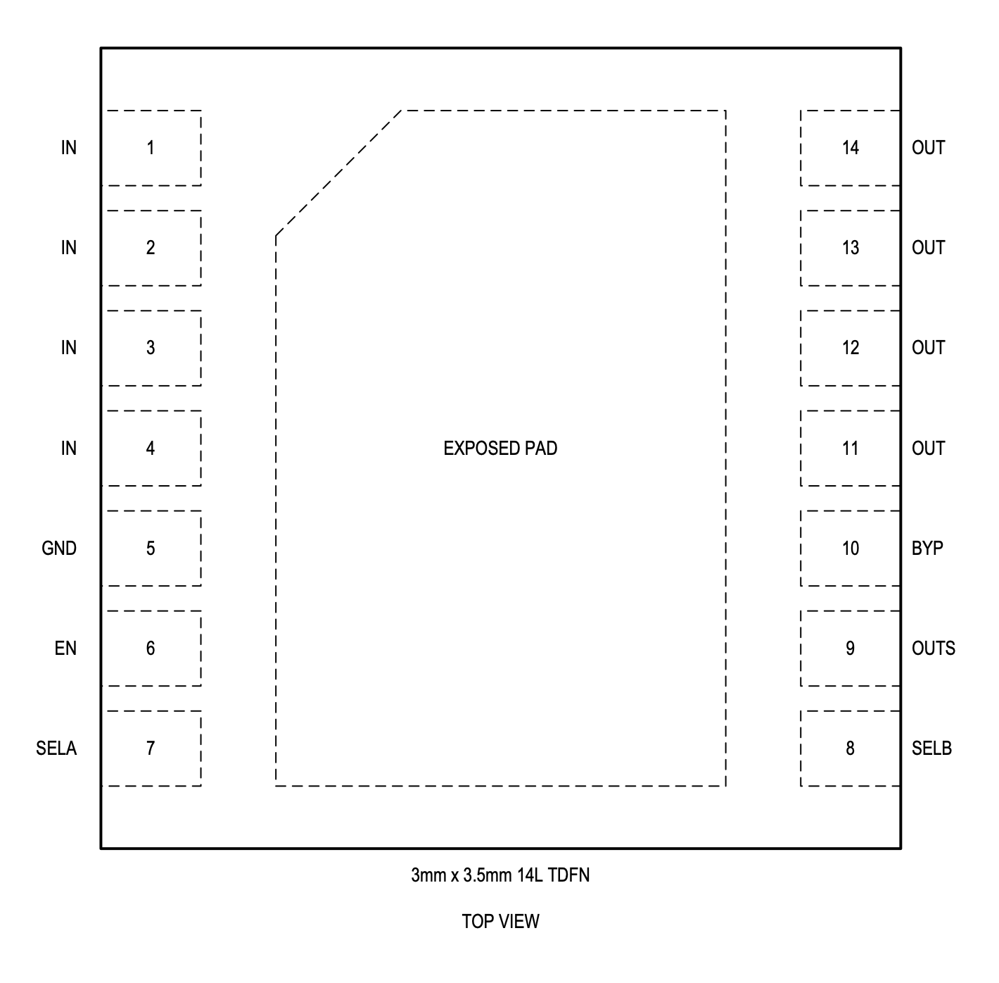
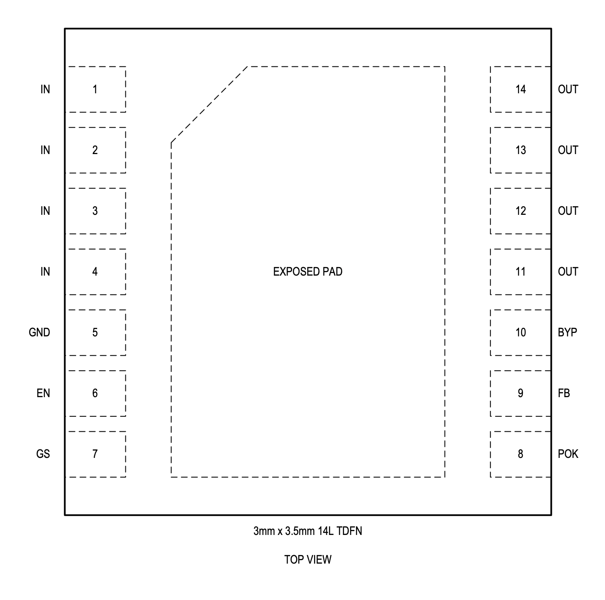

MAX25302A

Pin Description
| PIN | NAME | FUNCTION |
|---|---|---|
| 1,2,3,4 | IN | Regulator Supply Input. Connect to a voltage between 1.7V and 5.5V and bypass with a 22µF capacitor from IN to GND. |
| 5 | GND | Regulator Ground. Connect IN and OUT bypass capacitor GND connections to this pin for best performance. |
| 6 | EN | Enable Input. Connect this pin to a logic signal to enable (VEN high) or disable (VEN low) the regulator output. Connect to IN to keep the output enable whenever a valid supply voltage is present. |
| 7 | SELA | Output Select Input. Connect to GND, IN, or Hi-Z to select one of three states. The states of the SELA and SELB pins are read when the device is enabled, and are used to select one of nine output voltages. |
| 8 | SELB | Output Select Input. Connect to GND, IN, or Hi-Z to select one of three states. The states of the SELA and SELB pins are read when the device is enabled, and are used to select one of nine output voltages. |
| 9 | OUTS | Output Voltage Sense Input. Connect to the load at a point where accurate regulation is required to eliminate resistive metal drops. |
| 10 | BYP | Bypass Capacitor Input. Connect a capacitor with a value from 0.001μF to 0.1µF between OUT and BYP to reduce output noise and set the regulator soft-start rate. |
| 11,12,13,14 | OUT | Regulator Output. Sources up to 2A at the output regulation voltage. Bypass with a 22µF (8µF minimum, including voltage derating) low-ESR (< 0.03Ω) capacitor to GND. |
| EP | EP | Exposed Pad (TDFN Only). Connect the exposed pad to a ground plane with low thermal resistance to ambient to provide best heat sinking. |
MAX25302B

Pin Description
| PIN | NAME | FUNCTION |
|---|---|---|
| 1, 2, 3, 4 | IN | Regulator Supply Input. Connect to a voltage between 1.7V and 5.5V and bypass with a 22µF capacitor from IN to GND. |
| 5 | GND | Regulator Ground. Connect IN and OUT bypass capacitor GND connections to this pin for best performance. |
| 6 | EN | Enable Input. Connect this pin to a logic signal to enable (VEN high) or disable (VEN low) the regulator output. Connect to IN to keep the output enable whenever a valid supply voltage is present. |
| 7 | GS | Ground Sense. Connect GS to GND. |
| 8 | POK | Active-High Power-OK Output. Connect a pull-up resistor from this pin to a supply to create a reset signal that goes high after the regulator output has reached its regulation voltage. |
| 9 | FB | Feedback Divider Input. Connect a resistor-divider string from OUT to GND with the midpoint tied to this pin to set the output voltage. In the Typical Application Circuits, VOUT = 0.6V x (1 + R1/R2). |
| 10 | BYP | Bypass Capacitor Input. Connect a capacitor with a value from 0.001μF to 0.1µF between OUT and BYP to reduce output noise and set the regulator soft-start rate. |
| 11, 12, 13, 14 | OUT | Regulator Output. Sources up to 2A at the output regulation voltage. Bypass with a 22µF (8µF minimum, including voltage derating) low-ESR (< 0.03Ω) capacitor to GND. |
| EP | EP | Exposed Pad (TDFN Only). Connect the exposed pad to a ground plane with low thermal resistance to ambient to provide best heat sinking. |